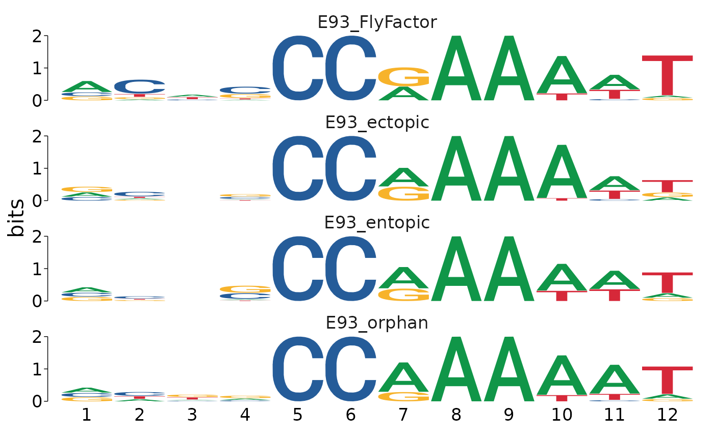

suppressPackageStartupMessages(library(GenomicRanges))
suppressPackageStartupMessages(library(magrittr))
suppressPackageStartupMessages(library(universalmotif))
library(memes)FIMO searches input sequences for occurrances of a motif. runFimo() has two required inputs: fasta-format sequences, with optional genomic coordinate headers, and a set of motifs to detect within the input sequences.
Sequence input to runFimo() can be as a path to a .fasta formatted file, or as a Biostrings::XStringSet object. Unlike other memes functions, runFimo() does not accept a Biostrings::BStringSetList as input. This is to simplify ranged join operations (see joins) on output data.
By default, runFimo() will parse genomic coordinates from sequence entries from the fasta headers. These are generated automatically if using get_sequences() to generate sequences for input from a GRanges object.
data("example_chip_summits", package = "memes")
dm.genome <- BSgenome.Dmelanogaster.UCSC.dm3::BSgenome.Dmelanogaster.UCSC.dm3
# Take 100bp windows around ChIP-seq summits
summit_flank <- example_chip_summits %>%
plyranges::anchor_center() %>%
plyranges::mutate(width = 100)
# Get sequences in peaks as Biostring::BStringSet
sequences <- summit_flank %>%
get_sequence(dm.genome)
# get_sequence includes genomic coordinate as the fasta header name
names(sequences)[1:2]
#> [1] "chr3L:40482-40581" "chr3L:49795-49894"Motif input to runFimo() can be as a path to a .meme formatted file, a list of universalmotif objects, or a singular universalmotif object. runFimo() will not use any of the default search path behavior for a motif database as in runAme() or runTomTom().
e93_motif <- MotifDb::MotifDb %>%
# Query the database for the E93 motif using it's gene name
MotifDb::query("Eip93F") %>%
# Convert from motifdb format to universalmotif format
universalmotif::convert_motifs() %>%
# The result is a list, to simplify the object, return it as a single universalmotif
.[[1]]
#> See system.file("LICENSE", package="MotifDb") for use restrictions.
# Rename the motif from it's flybase gene number to a more user-friendly name
e93_motif["name"] <- "E93_FlyFactor"runFimo() is configured to use different default behavior relative to the commandline and MEME-Suite Server versions. By default, runFimo() runs using text mode, which greatly increases speed and allows returning all detected matches to the input motifs. By default runFimo() will add the sequence of the matched region to the output data; however, this operation can be very slow for large sets of regions and can drastically increase the size of the output data. To speed up the operation and decrease data size, set skip_matched_sequence = TRUE. Sequence information can be added back later using add_sequence().
fimo_results <- runFimo(sequences, e93_motif)The plyranges package provides an extended framework for performing range-based operations in R. While several of its utilities are useful for range-based analyses, the join_ functions are particularly useful for integrating FIMO results with input peak information. A few common examples are briefly highlighted below:
plyranges::join_overlap_left() can be used to add peak-level metadata to motif position information:
fimo_results_with_peak_info <- fimo_results %>%
plyranges::join_overlap_left(summit_flank)
fimo_results_with_peak_info[1:5]
#> GRanges object with 5 ranges and 9 metadata columns:
#> seqnames ranges strand | motif_id motif_alt_id
#> <Rle> <IRanges> <Rle> | <character> <character>
#> [1] chr3L 66310-66321 - | E93_FlyFactor Eip93F_SANGER_10_FBg..
#> [2] chr3L 138527-138538 - | E93_FlyFactor Eip93F_SANGER_10_FBg..
#> [3] chr3L 384344-384355 - | E93_FlyFactor Eip93F_SANGER_10_FBg..
#> [4] chr3L 714116-714127 - | E93_FlyFactor Eip93F_SANGER_10_FBg..
#> [5] chr3L 714145-714156 - | E93_FlyFactor Eip93F_SANGER_10_FBg..
#> score pvalue qvalue matched_sequence id
#> <numeric> <numeric> <numeric> <character> <character>
#> [1] 14.25 1.01e-05 NA CCGGCCGAAAAT peak_4627
#> [2] 10.10 8.96e-05 NA CTGTCCAAAAAT peak_4647
#> [3] 10.87 6.65e-05 NA GCCGCCGAAAAA peak_4670
#> [4] 12.90 2.43e-05 NA CGTGCCAAAAAT peak_4752
#> [5] 10.25 8.51e-05 NA CTTCCCAAAAAA peak_4752
#> peak_binding_description e93_sensitive_behavior
#> <character> <character>
#> [1] ectopic Static
#> [2] orphan Static
#> [3] orphan Decreasing
#> [4] entopic Static
#> [5] entopic Static
#> -------
#> seqinfo: 2 sequences from an unspecified genome; no seqlengthsplyranges::intersect_() can be used to simultaneously subset input peaks to the ranges overlapping motif hits while appending motif-level metadata to each overlap.
input_intersect_hits <- summit_flank %>%
plyranges::join_overlap_intersect(fimo_results)
input_intersect_hits[1:5]
#> GRanges object with 5 ranges and 9 metadata columns:
#> seqnames ranges strand | id peak_binding_description
#> <Rle> <IRanges> <Rle> | <character> <character>
#> [1] chr3L 66310-66321 * | peak_4627 ectopic
#> [2] chr3L 138527-138538 * | peak_4647 orphan
#> [3] chr3L 384344-384355 * | peak_4670 orphan
#> [4] chr3L 714116-714127 * | peak_4752 entopic
#> [5] chr3L 714145-714156 * | peak_4752 entopic
#> e93_sensitive_behavior motif_id motif_alt_id score
#> <character> <character> <character> <numeric>
#> [1] Static E93_FlyFactor Eip93F_SANGER_10_FBg.. 14.25
#> [2] Static E93_FlyFactor Eip93F_SANGER_10_FBg.. 10.10
#> [3] Decreasing E93_FlyFactor Eip93F_SANGER_10_FBg.. 10.87
#> [4] Static E93_FlyFactor Eip93F_SANGER_10_FBg.. 12.90
#> [5] Static E93_FlyFactor Eip93F_SANGER_10_FBg.. 10.25
#> pvalue qvalue matched_sequence
#> <numeric> <numeric> <character>
#> [1] 1.01e-05 NA CCGGCCGAAAAT
#> [2] 8.96e-05 NA CTGTCCAAAAAT
#> [3] 6.65e-05 NA GCCGCCGAAAAA
#> [4] 2.43e-05 NA CGTGCCAAAAAT
#> [5] 8.51e-05 NA CTTCCCAAAAAA
#> -------
#> seqinfo: 2 sequences from an unspecified genome; no seqlengthsWhen setting skip_match_sequence = TRUE, FIMO does not automatically return the matched sequence within each hit. These sequences can be easily recovered in R using add_sequence() on the FIMO results GRanges object.
fimo_results_with_seq <- fimo_results %>%
plyranges::join_overlap_left(summit_flank) %>%
add_sequence(dm.genome)Returning the sequence of the matched regions can be used to re-derive PWMs from different match categories as follows (here done for different binding categories):
motifs_by_binding <- fimo_results_with_seq %>%
# Split on parameter of interest
split(mcols(.)$peak_binding_description) %>%
# Convert GRangesList to regular list() to use `purrr`
as.list() %>%
# imap passes the list entry as .x and the name of that object to .y
purrr::imap(~{
# Pass the sequence column to create_motif to generate a PCM
create_motif(.x$sequence,
# Append the binding description to the motif name
name = paste0("E93_", .y))
})Motifs from each category can be visualized with universalmotif::view_motifs()
motifs_by_binding %>%
view_motifs()To allow better comparison to the reference motif, we can append it to the list as follows:
motifs_by_binding <- c(
# Add the E93 FlyFactor motif to the list as a reference
list("E93_FlyFactor" = e93_motif),
motifs_by_binding
)Visualizing the motifs as ICMs reveals subtle differences in E93 motif sequence between each category.
motifs_by_binding %>%
view_motifs()
Visualizing the results as a position-probability matrix (PPM) does a better job of demonstrating that the primary differences between each category are coming from positions 1-4 in the matched sequences.
motifs_by_binding %>%
view_motifs(use.type = "PPM")Finally, the sequence-level information can be used to visualize all sequences and their contribution to the final PWM using plot_sequence_heatmap.
plot_sequence_heatmap(fimo_results_with_seq$sequence)importFimo() can be used to import an fimo.tsv file from a previous run on the MEME server or on the commandline. Details for how to save data from the FIMO webserver are below.
To download TSV data from the FIMO Server, right-click the FIMO TSV output link and “Save Target As” or “Save Link As” (see example image below), and save as <filename>.tsv. This file can be read using importFimo().
memes is a wrapper for a select few tools from the MEME Suite, which were developed by another group. In addition to citing memes, please cite the MEME Suite tools corresponding to the tools you use.
If you use runFimo() in your analysis, please cite:
Charles E. Grant, Timothy L. Bailey, and William Stafford Noble, “FIMO: Scanning for occurrences of a given motif”, Bioinformatics, 27(7):1017-1018, 2011. full text
The MEME Suite is free for non-profit use, but for-profit users should purchase a license. See the MEME Suite Copyright Page for details.
sessionInfo()
#> R Under development (unstable) (2021-03-18 r80099)
#> Platform: x86_64-pc-linux-gnu (64-bit)
#> Running under: Ubuntu 20.04.2 LTS
#>
#> Matrix products: default
#> BLAS/LAPACK: /usr/lib/x86_64-linux-gnu/openblas-pthread/libopenblasp-r0.3.8.so
#>
#> locale:
#> [1] LC_CTYPE=en_US.UTF-8 LC_NUMERIC=C
#> [3] LC_TIME=en_US.UTF-8 LC_COLLATE=en_US.UTF-8
#> [5] LC_MONETARY=en_US.UTF-8 LC_MESSAGES=C
#> [7] LC_PAPER=en_US.UTF-8 LC_NAME=C
#> [9] LC_ADDRESS=C LC_TELEPHONE=C
#> [11] LC_MEASUREMENT=en_US.UTF-8 LC_IDENTIFICATION=C
#>
#> attached base packages:
#> [1] parallel stats4 stats graphics grDevices utils datasets
#> [8] methods base
#>
#> other attached packages:
#> [1] memes_0.99.5 universalmotif_1.9.39 magrittr_2.0.1
#> [4] GenomicRanges_1.43.3 GenomeInfoDb_1.27.8 IRanges_2.25.6
#> [7] S4Vectors_0.29.11 BiocGenerics_0.37.1
#>
#> loaded via a namespace (and not attached):
#> [1] bitops_1.0-6 matrixStats_0.58.0
#> [3] fs_1.5.0 rprojroot_2.0.2
#> [5] tools_4.1.0 bslib_0.2.4
#> [7] utf8_1.2.1 R6_2.5.0
#> [9] splitstackshape_1.4.8 colorspace_2.0-0
#> [11] withr_2.4.1 processx_3.5.0
#> [13] tidyselect_1.1.0 compiler_4.1.0
#> [15] textshaping_0.3.3 Biobase_2.51.0
#> [17] desc_1.3.0 DelayedArray_0.17.10
#> [19] labeling_0.4.2 rtracklayer_1.51.5
#> [21] sass_0.3.1 scales_1.1.1
#> [23] readr_1.4.0 pkgdown_1.6.1.9001
#> [25] systemfonts_1.0.1 stringr_1.4.0
#> [27] digest_0.6.27 Rsamtools_2.7.1
#> [29] rmarkdown_2.7 R.utils_2.10.1
#> [31] XVector_0.31.1 pkgconfig_2.0.3
#> [33] htmltools_0.5.1.1 MatrixGenerics_1.3.1
#> [35] highr_0.8 fastmap_1.1.0
#> [37] BSgenome_1.59.2 rlang_0.4.10
#> [39] farver_2.1.0 BSgenome.Dmelanogaster.UCSC.dm3_1.4.0
#> [41] jquerylib_0.1.3 BiocIO_1.1.2
#> [43] generics_0.1.0 jsonlite_1.7.2
#> [45] BiocParallel_1.25.5 dplyr_1.0.5
#> [47] R.oo_1.24.0 RCurl_1.98-1.3
#> [49] GenomeInfoDbData_1.2.4 patchwork_1.1.1
#> [51] Matrix_1.3-2 Rcpp_1.0.6
#> [53] waldo_0.2.5 munsell_0.5.0
#> [55] fansi_0.4.2 lifecycle_1.0.0
#> [57] R.methodsS3_1.8.1 stringi_1.5.3
#> [59] yaml_2.2.1 MASS_7.3-53.1
#> [61] SummarizedExperiment_1.21.1 zlibbioc_1.37.0
#> [63] grid_4.1.0 ggseqlogo_0.1
#> [65] crayon_1.4.1 lattice_0.20-41
#> [67] Biostrings_2.59.2 hms_1.0.0
#> [69] ps_1.6.0 knitr_1.31
#> [71] pillar_1.5.1 rjson_0.2.20
#> [73] pkgload_1.2.0 XML_3.99-0.6
#> [75] glue_1.4.2 evaluate_0.14
#> [77] data.table_1.14.0 vctrs_0.3.7
#> [79] testthat_3.0.2 gtable_0.3.0
#> [81] purrr_0.3.4 tidyr_1.1.3
#> [83] rematch2_2.1.2 cachem_1.0.4
#> [85] ggplot2_3.3.3 xfun_0.22
#> [87] restfulr_0.0.13 ragg_1.1.2
#> [89] MotifDb_1.33.0 tibble_3.1.0
#> [91] diffobj_0.3.4 GenomicAlignments_1.27.2
#> [93] plyranges_1.11.0 memoise_2.0.0
#> [95] cmdfun_1.0.2 ellipsis_0.3.1